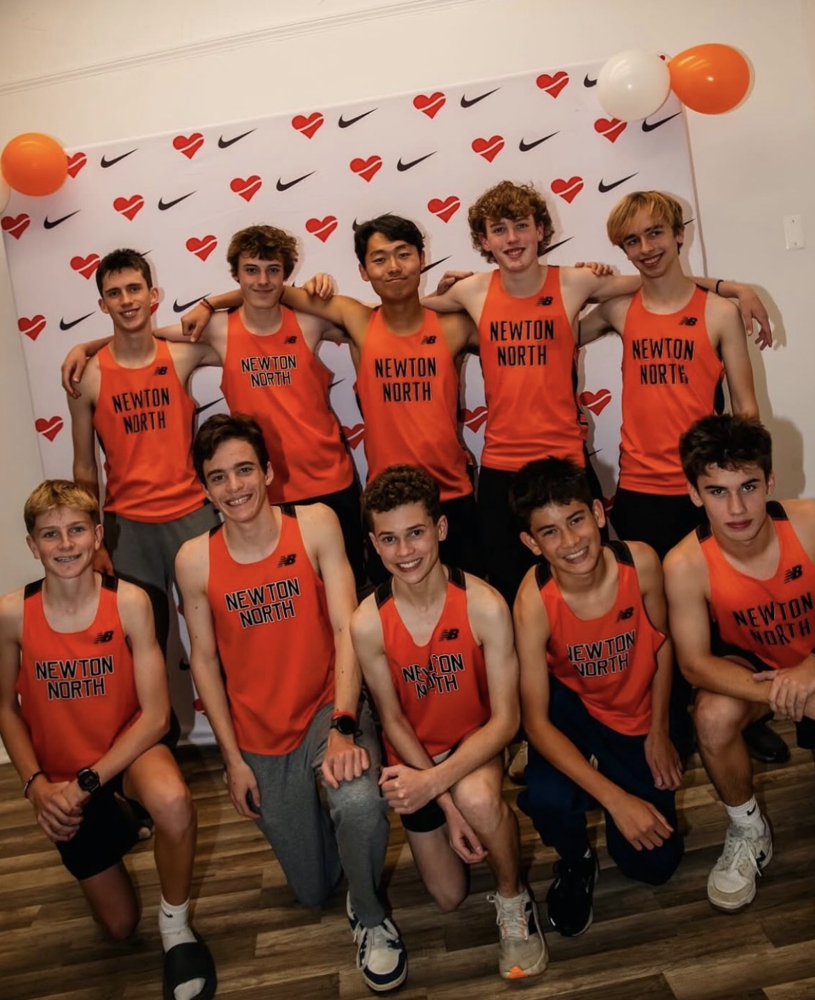
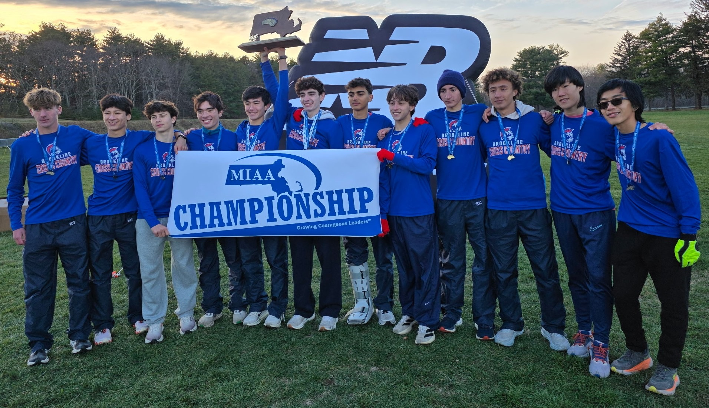
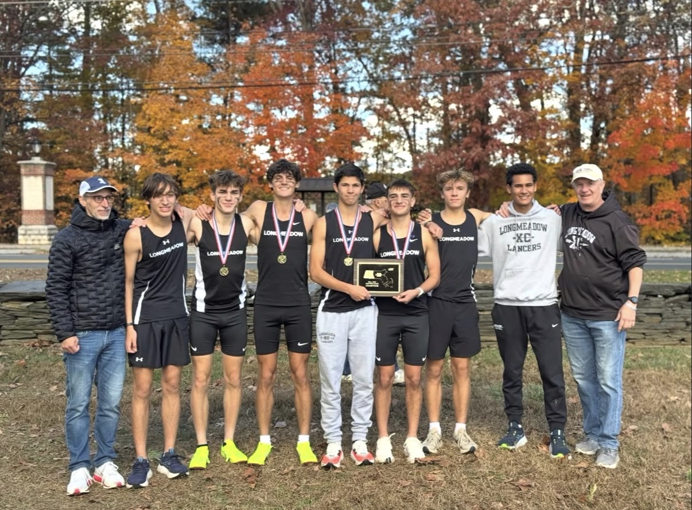
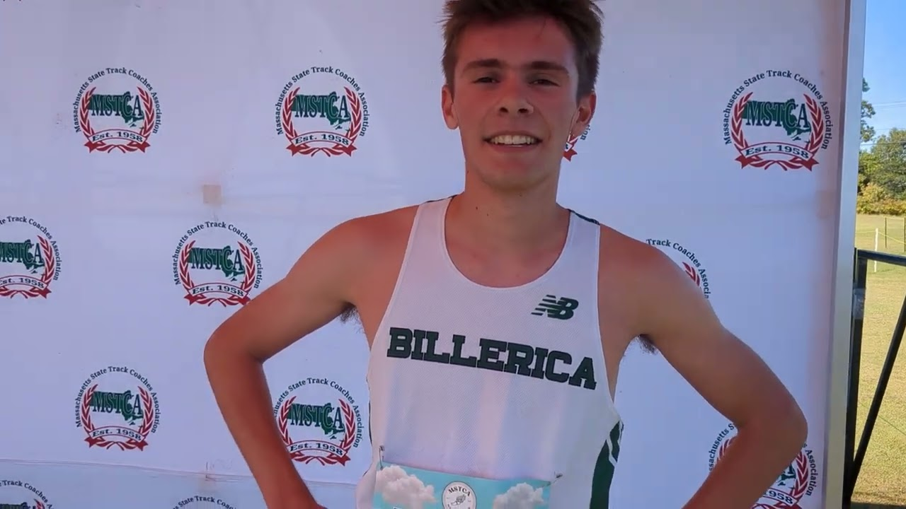
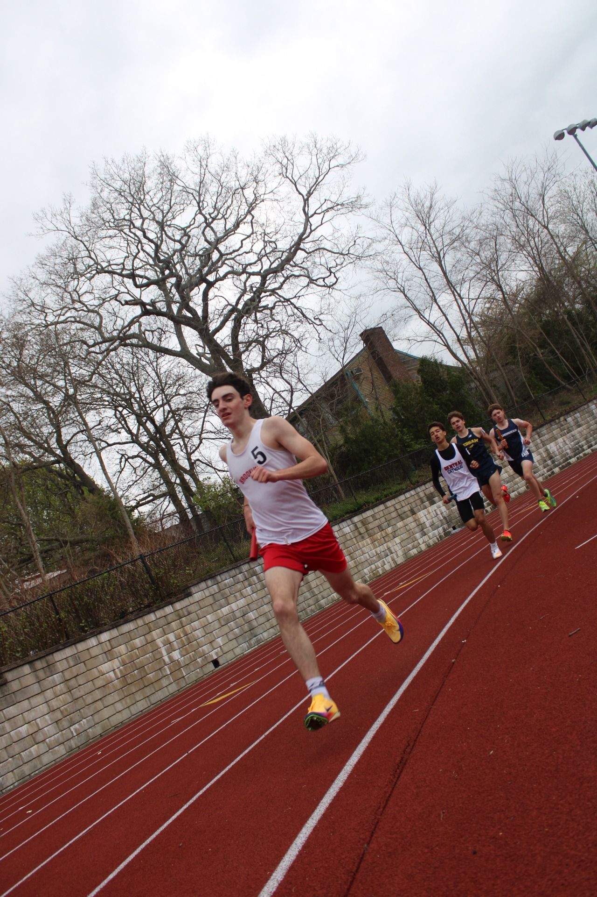
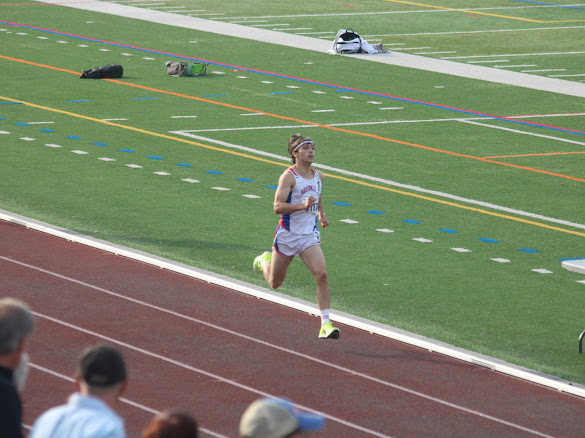
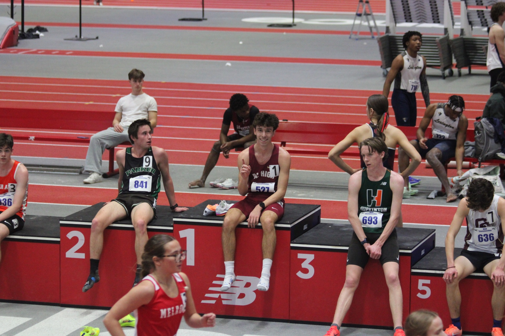
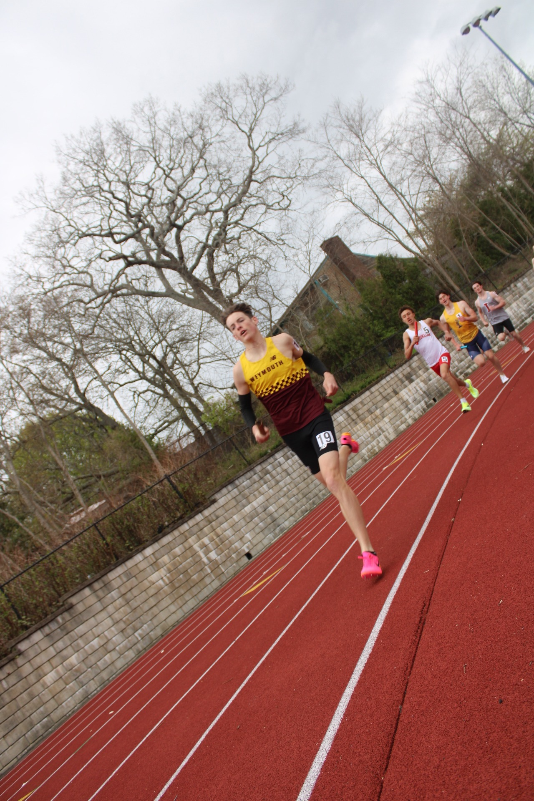

XC · 2026 PRESEASON RANKINGS
Massachusetts Top 15 Preseason Rankings: No. 10–1
The countdown concludes with the ten teams MDP believes enter the 2026 season with the best chance to make noise this fall.
Read article →Massachusetts High-School Distance Running
Race coverage, photography, interviews, and the people who make Massachusetts distance running special.

CROSS COUNTRY · 2026 SEASON PREVIEW
A talented front-runner and tight returning pack give Newton North a chance to surprise the Bay State Conference.
Read story →THE MAIN EVENT

XC · 2026 PRESEASON RANKINGS
The countdown concludes with the ten teams MDP believes enter the 2026 season with the best chance to make noise this fall.
Read article →
XC · 2026 PRESEASON RANKINGS
The first installment of MDP's preseason team rankings, featuring two honorable mentions and teams No. 15 through No. 11.
Read article →
XC · 2026 INDIVIDUAL PREVIEW
With no clear favorite entering the fall, Massachusetts has a deep group of contenders capable of taking the individual title in November.
Read article →XC · 2026 SEASON PREVIEW
A talented front-runner and tight returning pack give Newton North a chance to surprise the Bay State Conference.
Read article →
XC · 2026 SEASON PREVIEW
Brookline enters another season with championship expectations and a deep returning group.
Read article →SEE THE RACE

OUTDOOR TRACK · 2026
Photos from the 2026 Massachusetts Outdoor Track Meet of Champions.
View Gallery →
INDOOR TRACK · 2026
Photos from the 2026 Massachusetts Indoor Track Meet of Champions.
View Gallery →
OUTDOOR TRACK · 2026
Photos from the 2026 Massachusetts Outdoor Track Division 1 Relays.
View Gallery →AFTER THE FINISH
ABOUT THE PROJECT
Massachusetts Distance Project is an independent project focused on telling the stories of Massachusetts high-school distance runners.
The goal is simple: cover the races, photograph the athletes, talk to the people involved, and give the Massachusetts running community a place to experience the sport beyond a results sheet.
— Massachusetts Distance Project